Offensive mutations
Version
Please help with verifying or updating older sections of this article. At least some were last verified for version 4.2.
This article is for the PC version of Stellaris only.
This article is for the PC version of Stellaris only.
Ships
| |
Available only with the Grand Archive DLC enabled. |
| |
This article or part of this article was computer generated. It may need further formatting or rewriting. Please help improve this article if you can. |
Offensive mutations are variants of ship components that can be added to space fauna. Unlocking an offensive mutation requires the same technology as the matching ship component.
Missiles
| Weapon | Size | Damage per hit (average) |
Cooldown |
Average damage |
Range |
Accuracy |
Tracking |
Modifiers | Hull |
Evasion |
Speed |
Retargeting range |
Armor |
|---|---|---|---|---|---|---|---|---|---|---|---|---|---|
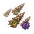 Ancient Nano-Talon Cloud Launcher |
1–2 (1.5) | 0.65 | 2.30 | 0–100 | 100% | 25% | 125% hull damage 100% armor penetration 100% shield penetration |
3 | 20% | 400 | 100 | 3.0 | |
| 3–5 (4.0) | 0.85 | 4.70 | 5 | 5.0 | |||||||||
| 7–12 (9.5) | 1.05 | 9.00 | 10 | 10.0 | |||||||||
| 17–29 (23.0) | 1.25 | 18.40 | 20 | 20.0 | |||||||||
| Miasma Launcher | 6–9 (7.5) | 7.50 | 1.00 | 0–100 | 100% | 40% | 100% shield penetration | 3 | 0% | 400 | 100 | 3.0 | |
| 16–24 (20.0) | 8.50 | 2.40 | 25% | 3 | 3.0 | ||||||||
| 50–75 (62.5) | 9.50 | 6.60 | 15% | 6 | 6.0 | ||||||||
| 130–205 (167.5) | 10.50 | 16.00 | 5% | 9 | 9.0 | ||||||||
| Volatile Miasma Launcher | 7–13 (10.0) | 7.50 | 1.30 | 0–100 | 100% | 40% | 100% shield penetration | 4 | 10% | 400 | 100 | 4.0 | |
| 21–32 (26.5) | 8.50 | 3.10 | 25% | 4 | 4.0 | ||||||||
| 65–98 (81.5) | 9.50 | 8.60 | 15% | 8 | 8.0 | ||||||||
| 169–267 (218.0) | 10.50 | 20.80 | 5% | 12 | 12.0 | ||||||||
| Antimatter Launcher | 9–17 (13.0) | 7.50 | 1.70 | 0–100 | 100% | 40% | 100% shield penetration | 5 | 20% | 400 | 100 | 5.0 | |
| 28–42 (35.0) | 8.50 | 4.10 | 25% | 5 | 5.0 | ||||||||
| 85–127 (106.0) | 9.50 | 11.20 | 15% | 10 | 10.0 | ||||||||
| 220–347 (283.5) | 10.50 | 27.00 | 5% | 20 | 20.0 | ||||||||
| Quantum Launcher | 12–22 (17.0) | 7.50 | 2.30 | 0–100 | 100% | 40% | 100% shield penetration | 6 | 30% | 400 | 100 | 6.0 | |
| 37–55 (46.0) | 8.50 | 5.40 | 25% | 6 | 6.0 | ||||||||
| 111–165 (138.0) | 9.50 | 14.50 | 15% | 12 | 12.0 | ||||||||
| 286–451 (368.5) | 10.50 | 35.10 | 5% | 24 | 24.0 | ||||||||
| Marauder Launcher | 16–28 (22.0) | 7.50 | 2.90 | 0–100 | 100% | 40% | 100% shield penetration | 7 | 40% | 400 | 100 | 7.0 | |
| 49–72 (60.5) | 8.50 | 7.10 | 25% | 7 | 7.0 | ||||||||
| 144–215 (179.5) | 9.50 | 18.90 | 15% | 14 | 14.0 | ||||||||
| 372–586 (479.0) | 10.50 | 45.60 | 5% | 28 | 28.0 | ||||||||
| Scourge Missile | 25–41 (33.0) | 4.80 | 6.90 | 0–90 | 100% | 100% | 80% armor damage 100% shield penetration |
4 | 40% | 400 | 120 | 0.0 | |
| 56–88 (72.0) | 5.25 | 13.70 | 90% | 8 | 0.0 | ||||||||
| 135–175 (155.0) | 5.70 | 27.20 | 80% | 15 | 0.0 | ||||||||
| 285–385 (335.0) | 6.15 | 54.50 | 70% | 30 | 0.0 | ||||||||
| Spore Launcher | 6–10 (8.0) | 3.25 | 2.50 | 0–120 | 100% | 65% | 100% shield penetration | 10 | 0% | 400 | 100 | 5.0 | |
| 16–22 (19.0) | 3.75 | 5.10 | 45% | 10 | 5.0 | ||||||||
| 36–50 (43.0) | 4.25 | 10.10 | 30% | 20 | 10.0 | ||||||||
| 80–110 (95.0) | 4.75 | 20.00 | 15% | 40 | 20.0 | ||||||||
| Barbed Spore Launcher | 10–17 (13.5) | 3.25 | 4.20 | 0–120 | 100% | 65% | 100% shield penetration | 15 | 0% | 400 | 100 | 8.0 | |
| 27–37 (32.0) | 3.75 | 8.50 | 45% | 15 | 8.0 | ||||||||
| 61–85 (73.0) | 4.25 | 17.20 | 30% | 30 | 15.0 | ||||||||
| 135–186 (160.5) | 4.75 | 33.80 | 15% | 60 | 30.0 | ||||||||
| Bio-Torpedoes | 25–38 (31.5) | 20.75 | 1.50 | 0–30 | 100% | 40% | 150% armor damage 0% shield damage 200% shield penetration |
1 | 0% | 200 | 100 | 1.0 | |
| 50–75 (62.5) | 20.75 | 3.00 | 20% | 2 | 2.0 | ||||||||
| 100–150 (125.0) | 20.75 | 6.00 | 10% | 4 | 4.0 | ||||||||
| 200–300 (250.0) | 20.75 | 12.00 | 0% | 8 | 8.0 | ||||||||
| Carapace Bio-Torpedoes | 33–49 (41.0) | 20.75 | 2.00 | 0–30 | 100% | 40% | 150% armor damage 0% shield damage 200% shield penetration |
2 | 0% | 225 | 100 | 2.0 | |
| 65–98 (81.5) | 20.75 | 3.90 | 20% | 3 | 3.0 | ||||||||
| 130–195 (162.5) | 20.75 | 7.80 | 10% | 7 | 7.0 | ||||||||
| 260–390 (325.0) | 20.75 | 15.70 | 0% | 13 | 13.0 | ||||||||
| Devastator Bio-Torpedoes | 43–64 (53.5) | 20.75 | 2.60 | 0–30 | 100% | 40% | 150% armor damage 0% shield damage 200% shield penetration |
3 | 0% | 250 | 100 | 3.0 | |
| 85–127 (106.0) | 20.75 | 5.10 | 20% | 5 | 5.0 | ||||||||
| 169–254 (211.5) | 20.75 | 10.20 | 10% | 10 | 10.0 | ||||||||
| 338–507 (422.5) | 20.75 | 20.40 | 0% | 19 | 19.0 |
{kind=link}
{kind=link}
{kind=link}
{kind=link}
{kind=link}
{kind=link}
{kind=link}
{kind=link}
{kind=link}
{kind=link}
{kind=link}
{kind=link}
Point Defence
| Weapon | Size | Damage per hit (average) |
Cooldown |
Average damage |
Range |
Accuracy |
Tracking |
Modifiers |
|---|---|---|---|---|---|---|---|---|
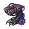 Ancient Web Slinger |
5–10 (7.5) | 1.00 | 5.60 | 0–30 | 75% | 30% | 200% armor damage 25% armor penetration 25% shield damage | |
| 5–10 (7.5) | 0.50 | 11.20 | ||||||
| 5–10 (7.5) | 0.25 | 22.50 | ||||||
| 5–10 (7.5) | 0.12 | 46.90 | ||||||
| 2–4 (3.0) | 1.00 | 2.20 | 0–30 | 75% | 50% | 25% armor damage 200% shield damage 25% shield penetration | ||
| 2–4 (3.0) | 0.50 | 4.50 | ||||||
| 2–4 (3.0) | 0.25 | 9.00 | ||||||
| 2–4 (3.0) | 0.12 | 18.80 | ||||||
| 3–6 (4.5) | 1.00 | 3.40 | 0–30 | 75% | 60% | 25% armor damage 200% shield damage 25% shield penetration | ||
| 3–6 (4.5) | 0.50 | 6.80 | ||||||
| 3–6 (4.5) | 0.25 | 13.50 | ||||||
| 3–6 (4.5) | 0.12 | 28.10 | ||||||
| 4–8 (6.0) | 1.00 | 4.50 | 0–30 | 75% | 70% | 25% armor damage 200% shield damage 25% shield penetration | ||
| 4–8 (6.0) | 0.50 | 9.00 | ||||||
| 4–8 (6.0) | 0.25 | 18.00 | ||||||
| 4.0–8.0 (6.0) | 0.12 | 37.50 | ||||||
| Nanite-Infused Barb Artillery | 6.0–11.0 (8.5) | 1.00 | 6.40 | 0–30 | 75% | 80% | 25% armor damage 200% shield damage 25% shield penetration | |
| 6.0–11.0 (8.5) | 0.50 | 12.70 | ||||||
| 6.0–11.0 (8.5) | 0.25 | 25.50 | ||||||
| 6.0–11.0 (8.5) | 0.12 | 53.10 | ||||||
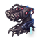 Sentinel Spitter Gun |
2.0–4.0 (3.0) | 1.00 | 2.20 | 0–30 | 75% | 10% | 200% armor damage 25% shield damage 25% shield penetration | |
| 2.0–4.0 (3.0) | 0.50 | 4.50 | ||||||
| 2.0–4.0 (3.0) | 0.25 | 9.00 | ||||||
| 2.0–4.0 (3.0) | 0.12 | 18.80 | ||||||
| Barrier Spitter Gun | 3.0–6.0 (4.5) | 1.00 | 3.40 | 0–30 | 75% | 20% | 200% armor damage 25% shield damage 25% shield penetration | |
| 3.0–6.0 (4.5) | 0.50 | 6.80 | ||||||
| 3.0–6.0 (4.5) | 0.25 | 13.50 | ||||||
| 3.0–6.0 (4.5) | 0.12 | 28.10 | ||||||
| Guardian Spitter Gun | 4.0–8.0 (6.0) | 1.00 | 4.50 | 0–30 | 75% | 30% | 200% armor damage 25% shield damage 25% shield penetration | |
| 4.0–8.0 (6.0) | 0.50 | 9.00 | ||||||
| 4.0–8.0 (6.0) | 0.25 | 18.00 | ||||||
| 4.0–8.0 (6.0) | 0.12 | 37.50 |
{kind=link}
{kind=link}
{kind=link}
{kind=link}
{kind=link}
Energy
| Weapon | Size | Damage per hit (average) |
Cooldown |
Average damage |
Range |
Accuracy |
Tracking |
Modifiers |
|---|---|---|---|---|---|---|---|---|
| Molecular Disruptor | 1–3 (2.0) | 1.20 | 1.70 | 0–30 | 100% | 90% | 100% armor penetration 100% shield penetration | |
| 1–11.2 (6.1) | 2.30 | 2.70 | 0–30 | 60% | ||||
| 1–28 (14.5) | 3.40 | 4.30 | 0–40 | 35% | ||||
| 1–61 (31.0) | 4.50 | 6.90 | 0–50 | 15% | ||||
| Ion Molecular Disruptor | 1–3.6 (2.3) | 1.20 | 1.90 | 0–30 | 100% | 90% | 100% armor penetration 100% shield penetration | |
| 1–14.7 (7.85) | 2.30 | 3.40 | 0–30 | 60% | ||||
| 1–37 (19.0) | 3.40 | 5.60 | 0–40 | 35% | ||||
| 1–79 (40.0) | 4.50 | 8.90 | 0–50 | 15% | ||||
| Phased Molecular Disruptor | 1–4.7 (2.85) | 1.20 | 2.40 | 0–30 | 100% | 90% | 100% armor penetration 100% shield penetration | |
| 1–19 (10.0) | 2.30 | 4.30 | 0–30 | 60% | ||||
| 1–48 (24.5) | 3.40 | 7.20 | 0–40 | 35% | ||||
| 1–103 (52.0) | 4.50 | 11.60 | 0–50 | 15% | ||||
| Proton Thrower | 6–13 (9.5) | 21.25 | 0.30 | 45–120 | 75% | 0% | 175% hull damage 150% armor damage 50% shield damage | |
| 12–25 (18.5) | 21.25 | 0.70 | ||||||
| 24–50 (37.0) | 21.25 | 1.30 | ||||||
| 47–101 (74.0) | 21.25 | 2.60 | ||||||
| Neutron Thrower | 7–17 (12.0) | 21.25 | 0.40 | 45–120 | 75% | 0% | 175% hull damage 150% armor damage 50% shield damage | |
| 15–33 (24.0) | 21.25 | 0.80 | ||||||
| 31–65 (48.0) | 21.25 | 1.70 | ||||||
| 61–131 (96.0) | 21.25 | 3.40 | ||||||
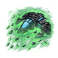 Bio-Disintegrator |
8–20 (14.0) | 4.25 | 3.00 | 0–30 | 90% | 70% | 150% hull damage 150% armor damage 25% shield damage | |
| 20–49 (34.5) | 4.25 | 7.30 | 0–30 | 60% | ||||
| 50–123 (86.5) | 4.25 | 18.30 | 0–50 | 30% | ||||
| 120–294 (207.0) | 4.25 | 43.80 | 0–70 | 5% | ||||
| Red Eye Beam | 2–7 (4.5) | 4.25 | 1.00 | 0–40 | 90% | 70% | 125% hull damage 150% armor damage 50% shield damage | |
| 6–16 (11.0) | 4.25 | 2.30 | 0–40 | 50% | ||||
| 15–40 (27.5) | 5.00 | 5.00 | 0–60 | 30% | ||||
| 36–96 (66.0) | 5.70 | 10.40 | 0–80 | 5% | ||||
| Blue Eye Beam | 3–9 (6.0) | 4.25 | 1.30 | 0–40 | 90% | 70% | 125% hull damage 150% armor damage 50% shield damage | |
| 8–21 (14.5) | 4.25 | 3.10 | 0–40 | 50% | ||||
| 20–53 (36.5) | 5.00 | 6.60 | 0–60 | 30% | ||||
| 48–126 (87.0) | 5.70 | 13.70 | 0–80 | 5% | ||||
| 5–11 (8.0) | 4.25 | 1.70 | 0–40 | 90% | 70% | 125% hull damage 150% armor damage 50% shield damage | ||
| 10–27 (18.5) | 4.25 | 3.90 | 0–40 | 50% | ||||
| 25–68 (46.5) | 5.00 | 8.40 | 0–60 | 30% | ||||
| 60–162 (111.0) | 5.70 | 17.50 | 0–80 | 5% | ||||
| 7–14 (10.5) | 4.25 | 2.20 | 0–40 | 90% | 70% | 125% hull damage 150% armor damage 50% shield damage | ||
| 13–35 (24.0) | 4.25 | 5.10 | 0–40 | 50% | ||||
| 33–88 (60.5) | 5.00 | 10.90 | 0–60 | 30% | ||||
| 78–210 (144.0) | 5.70 | 22.70 | 0–80 | 5% | ||||
| 9–20 (14.5) | 4.25 | 3.10 | 0–40 | 90% | 70% | 125% hull damage 150% armor damage 50% shield damage | ||
| 17–46 (31.5) | 4.25 | 6.70 | 0–40 | 50% | ||||
| 43–115 (79.0) | 5.00 | 14.20 | 0–60 | 30% | ||||
| 102–276 (189.0) | 5.70 | 29.80 | 0–80 | 5% | ||||
| Sharp-Eye Laser | 2–7 (4.5) | 1.20 | 3.00 | 0–30 | 80% | 60% | 150% hull damage 150% armor damage 50% shield damage | |
| 8–21 (14.5) | 2.30 | 4.70 | 0–30 | 75% | 40% | |||
| 20–53 (36.5) | 3.40 | 7.50 | 0–40 | 70% | 20% | |||
| 48–122 (85.0) | 4.50 | 12.30 | 0–50 | 65% | 10% | |||
| Bio-Plasma Thrower | 5–14 (9.5) | 5.00 | 1.50 | 0–40 | 80% | 70% | 150% hull damage 200% armor damage 25% shield damage | |
| 12–33 (22.5) | 5.00 | 3.60 | 0–40 | 40% | ||||
| 30–83 (56.5) | 5.70 | 7.90 | 0–60 | 20% | ||||
| 72–198 (135.0) | 6.40 | 16.90 | 45–80 | 5% | ||||
| Bio-Plasma Accelerator | 7–19 (13.0) | 5.00 | 2.10 | 0–40 | 80% | 70% | 150% hull damage 200% armor damage 25% shield damage | |
| 16–43 (29.5) | 5.00 | 4.70 | 0–40 | 40% | ||||
| 40–108 (74.0) | 5.70 | 10.40 | 0–60 | 20% | ||||
| 96–258 (177.0) | 6.40 | 22.10 | 45–80 | 5% | ||||
| 10–24 (17.0) | 5.00 | 2.70 | 0–40 | 80% | 70% | 150% hull damage 200% armor damage 25% shield damage | ||
| 21–56 (38.5) | 5.00 | 6.20 | 0–40 | 40% | ||||
| 53–140 (96.5) | 5.70 | 13.50 | 0–60 | 20% | ||||
| 126–336 (231.0) | 6.40 | 28.90 | 45–80 | 5% | ||||
Cuthuloid only |
120.0–300.0 (210.0) | 11.40 | 16.60 | 45–180 | 90% | 20% | 150% hull damage 200% armor damage 75% shield damage | |
| 300.0–750.0 (525.0) | 11.40 | 41.40 | 10% | |||||
| 650.0–1600.0 (1125.0) | 11.40 | 88.80 | 0% |
{kind=link}
{kind=link}
{kind=link}
{kind=link}
{kind=link}
{kind=link}
{kind=link}
{kind=link}
{kind=link}
{kind=link}
{kind=link}
Energy archaeotech
| Weapon | Size | Damage per hit (average) |
Cooldown |
Average damage |
Range |
Accuracy |
Tracking |
Modifiers |
|---|---|---|---|---|---|---|---|---|
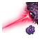 Ancient Collapser Beam |
6–14 (10.0) | 4.25 | 2.10 | 0–40 | 90% | 70% | 150% armor damage 50% armor penetration 50% shield damage | |
| 11.5–31 (21.25) | 4.25 | 4.50 | 0–40 | 50% | ||||
| 28.75–75 (51.875) | 5.00 | 9.30 | 0–60 | 30% | ||||
| 69–186 (127.5) | 5.70 | 20.10 | 0–80 | 5% |
{kind=link}
Energy artillery
| Weapon | Size | Damage per hit (average) |
Cooldown |
Average damage |
Range |
Accuracy |
Tracking |
Modifiers |
|---|---|---|---|---|---|---|---|---|
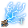 Lightning Emitter |
1–60 (30.5) | 10.10 | 3.00 | 0–80 | 100% | 75% | 100% armor penetration 100% shield penetration | |
| 1–140 (70.5) | 10.10 | 7.00 | 0–90 | 35% | ||||
| 1–300 (150.5) | 10.10 | 14.90 | 0–100 | 15% | ||||
| 1–650 (325.5) | 10.10 | 32.20 | 0–120 | 5% | ||||
| 2–78 (40.0) | 10.10 | 4.00 | 0–80 | 100% | 75% | 100% armor penetration 100% shield penetration | ||
| 2–182 (92.0) | 10.10 | 9.10 | 0–90 | 35% | ||||
| 2–390 (196.0) | 10.10 | 19.40 | 0–100 | 15% | ||||
| 2–845 (423.5) | 10.10 | 41.90 | 0–120 | 5% | ||||
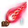 Particle Beam |
16–39 (27.5) | 6.55 | 3.60 | 0–60 | 85% | 50% | 150% hull damage 200% armor damage 50% shield damage | |
| 38–102 (70.0) | 7.40 | 8.00 | 0–80 | 30% | ||||
| 90–250 (170.0) | 8.25 | 17.50 | 0–100 | 15% | ||||
| 220–570 (395.0) | 9.10 | 36.90 | 0–120 | 5% | ||||
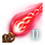 Tachyon Beam |
21–51 (36.0) | 6.55 | 4.70 | 0–60 | 85% | 50% | 150% hull damage 200% armor damage 50% shield damage | |
| 49–133 (91.0) | 7.40 | 10.50 | 0–80 | 30% | ||||
| 117–325 (221.0) | 8.25 | 22.80 | 0–100 | 15% | ||||
| 286–741 (513.5) | 9.10 | 48.00 | 0–120 | 5% |
{kind=link}
{kind=link}
{kind=link}
Energy space fauna
| Weapon | Size | Damage per hit (average) |
Cooldown |
Average damage |
Range |
Accuracy |
Tracking |
Modifiers |
|---|---|---|---|---|---|---|---|---|
| 1–7 (4.0) | 3.50 | 1.00 | 0–40 | 90% | 90% | 25% hull damage 25% armor damage 400% shield damage | ||
| 6–16 (11.0) | 4.25 | 2.30 | 0–60 | 60% | ||||
| 15–40 (27.5) | 5.00 | 5.00 | 0–90 | 30% | ||||
| 36–95 (65.5) | 5.70 | 10.30 | 0–120 | 5% | ||||
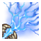 Lightning Breath |
1–6 (3.5) | 1.90 | 1.80 | 0–30 | 100% | 90% | 100% armor penetration 100% shield penetration | |
| 1–20 (10.5) | 3.70 | 2.80 | 0–40 | 60% | ||||
| 1–49 (25.0) | 5.40 | 4.60 | 0–50 | 45% | ||||
| 1–106 (53.5) | 7.15 | 7.50 | 0–60 | 30% | ||||
| 3–9 (6.0) | 3.50 | 1.70 | 0–40 | 100% | 75% | 25% armor damage 200% shield damage | ||
| 8–21 (14.5) | 4.25 | 3.40 | 0–60 | 35% | ||||
| 20–52 (36.0) | 5.00 | 7.20 | 0–80 | 15% | ||||
| 48–118 (83.0) | 5.75 | 14.40 | 0–100 | 5% |
{kind=link}
Kinetic
| Weapon | Size | Damage per hit (average) |
Cooldown |
Average damage |
Range |
Accuracy |
Tracking |
Modifiers |
|---|---|---|---|---|---|---|---|---|
| Thorn Cannon | 3–6 (4.5) | 0.65 | 5.90 | 0–30 | 85% | 90% | 125% hull damage 25% armor damage 150% shield damage | |
| 8–16 (12.0) | 0.85 | 12.00 | 0–30 | 75% | ||||
| 20–40 (30.0) | 1.30 | 19.60 | 0–35 | 50% | ||||
| 48–96 (72.0) | 1.70 | 36.00 | 0–40 | 25% | ||||
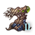 Ripper Thorn Cannon |
4–8 (6.0) | 0.65 | 7.80 | 0–30 | 85% | 90% | 125% hull damage 25% armor damage 150% shield damage | |
| 10–21 (15.5) | 0.85 | 15.50 | 0–30 | 75% | ||||
| 25–53 (39.0) | 1.30 | 25.50 | 0–35 | 50% | ||||
| 60–126 (93.0) | 1.70 | 46.50 | 0–40 | 25% | ||||
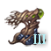 Acidstorm Thorn Cannon |
5–11 (8.0) | 0.65 | 10.50 | 0–30 | 85% | 90% | 125% hull damage 25% armor damage 150% shield damage | |
| 13–27 (20.0) | 0.85 | 20.00 | 0–30 | 75% | ||||
| 33–68 (50.5) | 1.30 | 33.00 | 0–35 | 50% | ||||
| 78–162 (120.0) | 1.70 | 60.00 | 0–40 | 25% | ||||
| Shard Accelerator | 1–5 (3.0) | 2.15 | 1.00 | 0–40 | 75% | 70% | 50% armor damage 150% shield damage | |
| 5–16 (10.5) | 2.90 | 2.70 | 0–50 | 50% | ||||
| 13–40 (26.5) | 3.60 | 5.50 | 0–75 | 30% | ||||
| 30–96 (63.0) | 4.25 | 11.10 | 45–100 | 5% | ||||
| Bio-Coil Shard Accelerator | 2–6 (4.0) | 2.15 | 1.40 | 0–40 | 75% | 70% | 50% armor damage 150% shield damage | |
| 7–21 (14.0) | 2.90 | 3.60 | 0–50 | 50% | ||||
| 18–53 (35.5) | 3.60 | 7.40 | 0–75 | 30% | ||||
| 42–126 (84.0) | 4.25 | 14.80 | 45–100 | 5% | ||||
| Shard Rail Accelerator | 3–8 (5.5) | 2.16 | 1.90 | 0–40 | 75% | 70% | 50% armor damage 150% shield damage | |
| 9–27 (18.0) | 2.90 | 4.70 | 0–50 | 50% | ||||
| 23–68 (45.5) | 3.60 | 9.50 | 0–75 | 30% | ||||
| 54–162 (108.0) | 4.25 | 19.10 | 45–100 | 5% | ||||
| Advanced Shard Rail Accelerator | 4–10 (7.0) | 2.15 | 2.40 | 0–40 | 75% | 70% | 50% armor damage 150% shield damage | |
| 12–35 (23.5) | 2.90 | 6.10 | 0–50 | 50% | ||||
| 30–88 (59.0) | 3.60 | 12.30 | 45–75 | 30% | ||||
| 72–210 (141.0) | 4.25 | 24.90 | 45–100 | 5% | ||||
| Shard Gauss Accelerator | 6–13 (9.5) | 2.15 | 3.30 | 0–40 | 75% | 70% | 0% hull damage 50% armor damage 150% shield damage | |
| 16–46 (31.0) | 2.90 | 8.00 | 0–50 | 50% | ||||
| 40–115 (77.5) | 3.60 | 16.10 | 0–75 | 30% | ||||
| 96–276 (186.0) | 4.25 | 32.80 | 45–100 | 5% | ||||
| Nanite-Infused Thorn Cannon | 7–14 (10.5) | 0.65 | 13.70 | 0–30 | 85% | 90% | 125% hull damage 25% armor damage 150% shield damage | |
| 17–35 (26.0) | 0.85 | 26.00 | 0–30 | 75% | ||||
| 43–88 (65.5) | 1.30 | 42.80 | 0–35 | 50% | ||||
| 102–210 (156.0) | 1.70 | 78.00 | 0–40 | 25% |
{kind=link}
{kind=link}
{kind=link}
{kind=link}
{kind=link}
{kind=link}
{kind=link}
{kind=link}
Kinetic archaeotech
{kind=link}
{kind=link}
Kinetic artillery
| Weapon | Size | Damage per hit (average) |
Cooldown |
Average damage |
Range |
Accuracy |
Tracking |
Modifiers |
|---|---|---|---|---|---|---|---|---|
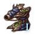 Chitin Battery |
15–45 (30.0) | 5.80 | 3.90 | 0–60 | 75% | 6% | 50% armor damage 200% shield damage | |
| 32–96 (64.0) | 6.25 | 7.70 | 0–80 | 35% | ||||
| 70–210 (140.0) | 6.70 | 15.70 | 0–100 | 15% | ||||
| 150–450 (300.0) | 7.15 | 31.50 | 0–120 | 0% | ||||
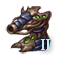 Chitin Artillery |
20–60 (40.0) | 5.80 | 5.20 | 0–60 | 75% | 6% | 50% armor damage 200% shield damage | |
| 42–126 (84.0) | 6.25 | 10.10 | 0–80 | 35% | ||||
| 91–273 (182.0) | 6.70 | 20.40 | 45–100 | 15% | ||||
| 195–585 (390.0) | 7.15 | 40.90 | 45–120 | 0% | ||||
| Mega Bombard | 29–71 (50.0) | 7.40 | 5.10 | 0–60 | 75% | 45% | 25% armor damage 150% shield damage | |
| 65–165 (115.0) | 8.40 | 10.30 | 0–80 | 25% | ||||
| 140–400 (270.0) | 9.40 | 21.50 | 45–10 | 10% | ||||
| 310–900 (605.0) | 10.40 | 43.60 | 45–120 | 0% | ||||
| Giga Bombard | 38–92 (65.0) | 7.40 | 6.60 | 0–60 | 75% | 45% | 25% armor damage 150% shield damage | |
| 85–215 (150.0) | 8.40 | 13.40 | 0–80 | 25% | ||||
| 182–520 (351.0) | 9.40 | 28.00 | 45–10 | 10% | ||||
| 403–1170 (786.5) | 10.40 | 56.70 | 45–120 | 0% |
{kind=link}
{kind=link}
{kind=link}
{kind=link}
References
Game concepts
| Exploration | Exploration • FTL • Unique systems • L-Cluster • Pre-FTL species • Fallen empire • Spaceborne aliens • Enclaves • Guardians • Marauders • Caravaneers |
| Celestial bodies | Celestial body • Colonization • Planetary features • Planet modifiers |
| Discovery | Discovery • Anomaly • Archaeological site • Astral rift • Relics • Collection |
| Species | Species • Pop modification • Biological traits • Machine traits • Population • Species rights • Ethics |
| Leaders | Leader • Common leader traits • Commander traits • Official traits • Scientist traits • Paragons |
| Governance | Empire • Origin • Government • Civics • Council • Policies • Edicts • Factions • Traditions • Ascension perks • Ambition • Situations |
| Economy | Resources • Planetary management • Districts • Jobs • Designation • Trade • Megastructures • Waystation |
| Buildings | Planet capital • Common buildings • Planet unique • Empire unique • Holdings |
| Ships | Ship • Arkship • Ship designer • Core components • Weapon components • Utility components • Mutations • Offensive mutations |
| Technology | Technology • Physics research • Society research • Engineering research |
| Diplomacy | Diplomacy • Relations • Galactic community • Federations • Subject empires • Intelligence • Contracts • AI personalities |
| Warfare | Warfare • Space warfare • Land warfare • Starbase • Crisis |
| Others | Events • The Shroud • Preset empires • AI players • Stat modifiers • Console commands • Easter eggs |